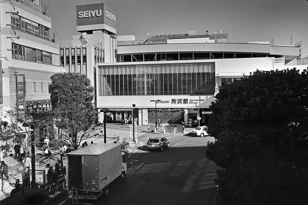
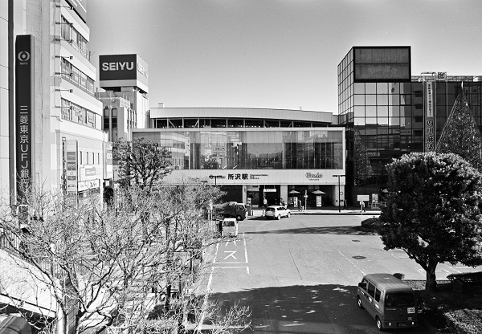

所沢駅 Tokorozawa
東村山駅←← 西武新宿線 →→航空公園駅
秋津駅←← 西武池袋線 →→西所沢駅

2018/11 ﾐﾉﾙﾀCLE ｽﾞﾐｸﾛﾝ35mm ｱｸﾛｽ

2018/11 ﾐﾉﾙﾀCLE ｽﾞﾐｸﾛﾝ35mm ｱｸﾛｽ

2018/11 ﾐﾉﾙﾀCLE ｽﾞﾐｸﾛﾝ35mm ｱｸﾛｽ

2017/1 PentaxSP Tessar2.8/50 Acros

2017/1 PentaxSP Tessar2.8/50 Acros

2016/12 HexarRF Color-skopar25/f4 Acros

2014/11 Rollei35 Acros